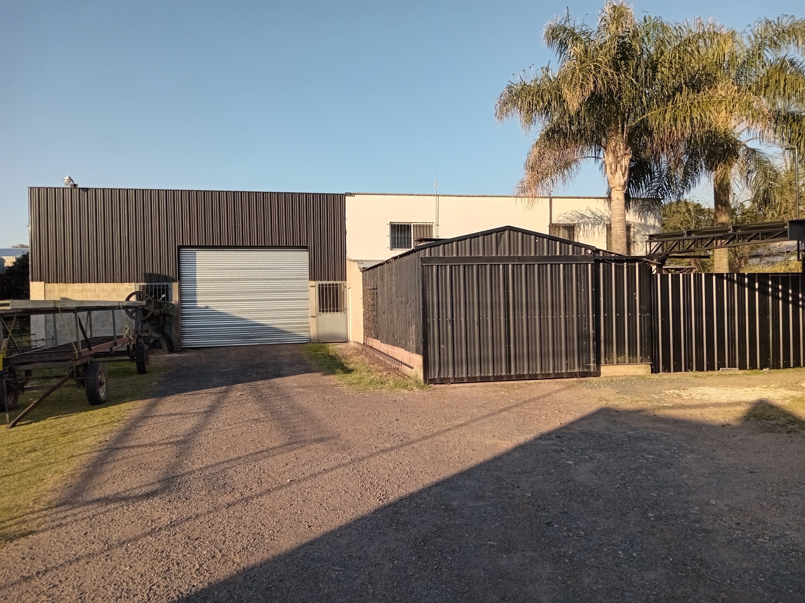

Mismo lugar, misma calidad, más de 30 años
Quiénes Somos
Herrería de Obra Angel Russi: décadas de experiencia armando y montando estructuras metálicas.

Herrería de Obra Angel Russi: décadas de experiencia armando y montando estructuras metálicas.
Herrería de Obra Angel Russi trabaja desde hace años en Torres, Luján. Fabricando y montando estructuras metálicas para el campo y la industria. Empezamos como un taller chico y fuimos creciendo obra a obra, siempre con el mismo criterio: hacer las cosas bien, con vigas de calidad y terminaciones prolijas.
Nos dedicamos a la fabricación y el montaje de estructuras metálicas a medida. Cada trabajo se calcula, se corta y se arma en nuestro taller antes de salir a obra, para asegurar que el montaje final sea rápido y prolijo.
Estructuras para guardado de maquinaria, acopio de granos, hangares, talleres y depósitos.
Torres calculadas y armadas para elevar y sostener tanques de agua en el campo o la industria.
Portones, rejas, escaleras, barandas y todo tipo de trabajo en hierro para obra y vivienda.
Visitamos el terreno y conversamos con el cliente para entender bien qué necesita antes de armar el proyecto y el presupuesto.
Calculamos, cortamos, soldamos y montamos con nuestro propio equipo, sin tercerizar las etapas críticas del trabajo.
Usamos materiales acordes a cada estructura y cuidamos la terminación para que la obra dure en el tiempo.
Escribinos o llamanos y te contamos cómo trabajamos, sin compromiso.